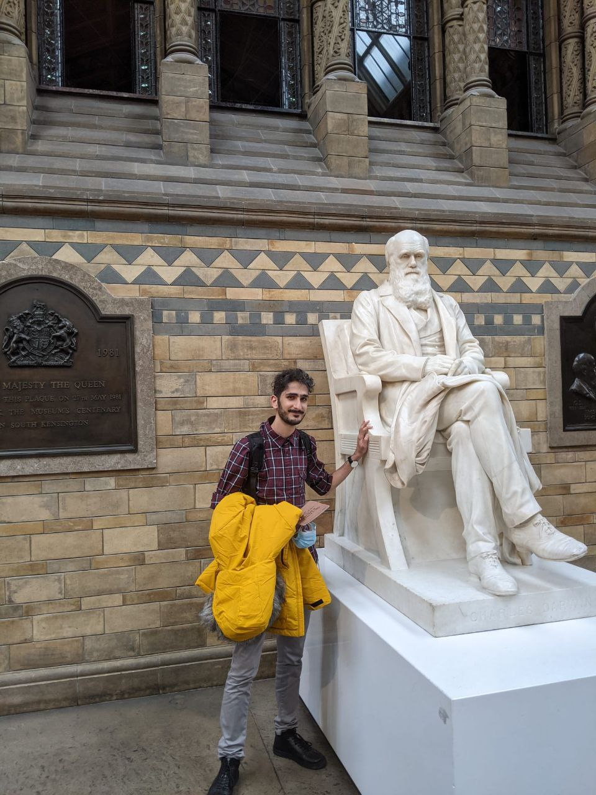

I'm AmirAli and I'm currently a PhD student @ Kamoun Lab @ The Sainsbury Lab, UK. I study how plants defend themselves against pathogens. My research focuses on NLR evolution and mechanistic biology. Throughout the years I've used many methods like biochemistry, structural biology, and bioinformatics to get around questions about NLR biology and evolution. But I can safely say I'm more of a computational biologist and like to maximize my efforts before getting into the lab! Well, take a look around and feel free to contact me if you have any questions or enquiries.
